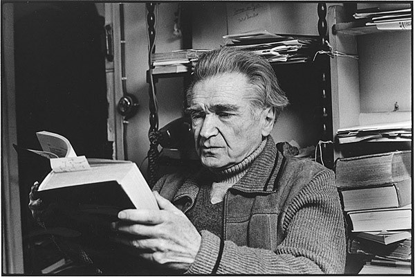

«Stanotte ho riflettuto sulla vita, sull'avventura, sull'errore portentoso che essa rappresenta alla superficie di questa materia ostile, e sono stato colto da un moto di pietà per lei, e per l'infinità dei vivi, l'improvvisazione tragica che è ogni individuo.»
(Emil Cioran, Quaderni 1957-1972)
